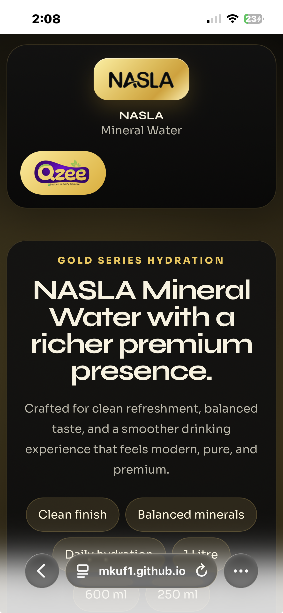

Purity First
Made for people who want a fresh-tasting bottle with a clean profile and a dependable everyday feel.

Mineral Water
Gold Series Hydration
Crafted for clean refreshment, balanced taste, and a smoother drinking experience that feels modern, pure, and premium.

Why NASLA
Made for people who want a fresh-tasting bottle with a clean profile and a dependable everyday feel.
Mineral balance helps the water feel smoother on the palate while keeping hydration simple and refreshing.
The black-and-gold presentation gives NASLA a bold shelf presence built for modern retail and events.
NASLA Mineral Water is available in 1 litre, 600 ml, and 250 ml bottles for daily use, travel, and retail display.
Benefits
Easy to drink throughout the day.
A premium bottle look for tables, counters, and showcases.
Built to feel crisp and smooth with every sip.
A straightforward mineral water for home, retail, and travel.
Perfect For
Keep it close for regular hydration with a bottle that feels elegant without being heavy.
Strong visual identity, neat packaging, and a premium look that works well on shelves and in coolers.